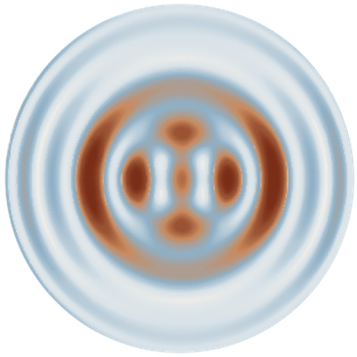
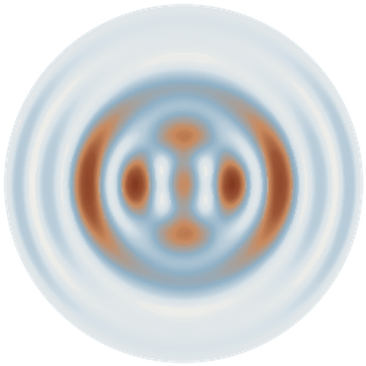
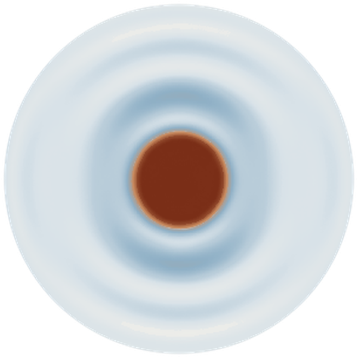
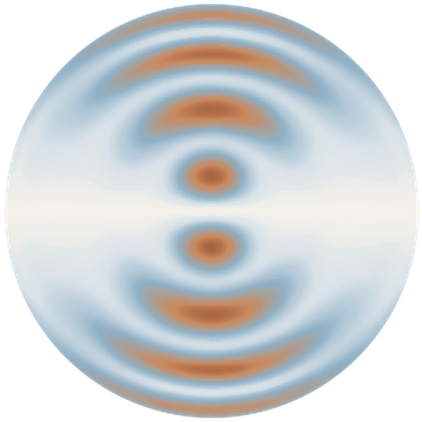
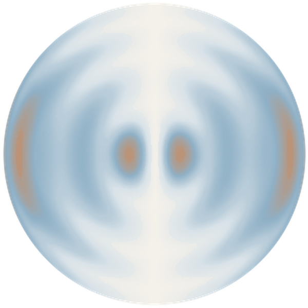

Interests
A few lines on what you work on and why goes here.
Publications
Papers, preprints and talks go here, one per line.
CV
Education, positions and awards go here, or a link to the PDF.








A few lines on what you work on and why goes here.
Papers, preprints and talks go here, one per line.
Education, positions and awards go here, or a link to the PDF.